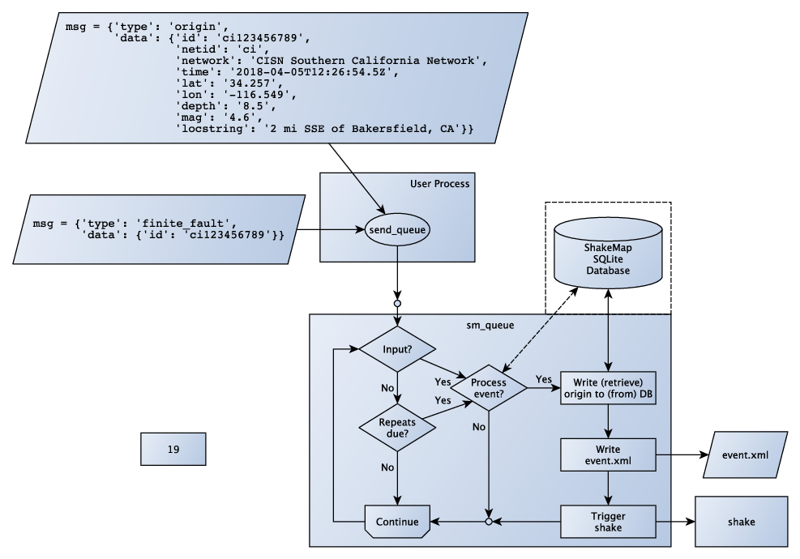
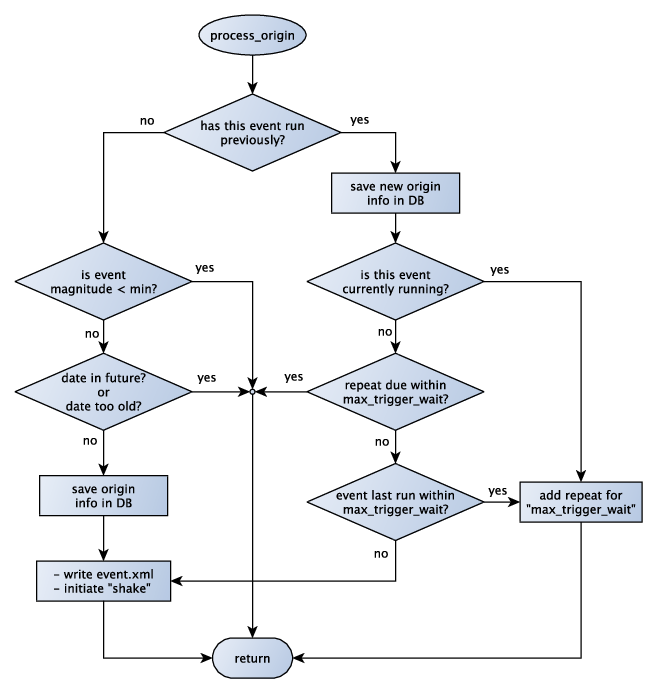
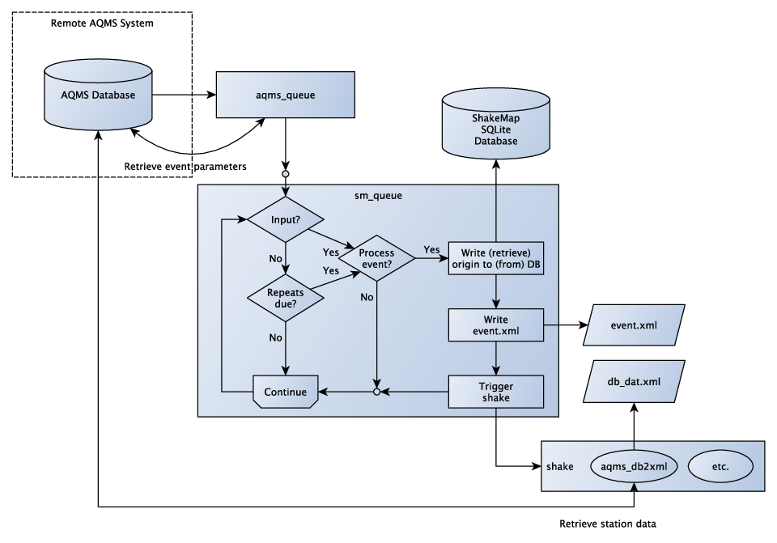

Queueing Events¶
Many regional operators will require an automated method of
triggering ShakeMap runs. Shakemap v4 provides a flexible mechanism
for filtering events and initiating runs via the sm_queue
program. sm_queue may be initiated via an init script (see
init.sh in the contrib directory, for example) which can
started by a system startup script, or maintained by crontab.
sm_queue waits on a socket for messages from an external
process or database. The messages – serialized JSON – may be
of several types, and when received from a trusted source,
instruct the queue to take certain actions: rerun the event,
cancel the event, or possibly take no action, depending on
the configuration and the specifics of the event and its run
history.
For the purposes of this discussion, we will treat the JSON from the sending process as a Python dictionary This dictionary must have keys “type” and “data”. Special keys for “type” are “origin”, “cancel”, and “test”. If the type is “origin”, then the “data” element needs to describe the origin with the appropriate informmation. Here is an example of an origin-type dictionary:
{'type': 'origin',
'data': {'id': 'us1000abcd',
'netid': 'us',
'network': '',
'time': '2018-05-06T14:12:16.5Z',
'lat': '34.5',
'lon': '123.6',
'depth': '6.2',
'mag': '5.6',
'locstring': '231 km SE of Guam'
'alt_eventids': 'id1,id2,id3',
'action': 'Event added'}}
The fields are:
id |
Event ID |
netid |
The (usually) 2-letter network code |
network |
A text description of the network |
time |
Origin time in UTC: YYYY-mm-ddTHH:MM:SS.fZ’ |
lat |
Origin latitude |
lon |
Origin longitude |
depth |
Origin depth |
mag |
Origin magnitude |
locstring |
A text description of the origin location |
alt_eventids |
A comma-separated list of alternate event IDs for the event |
action |
A text description action that resulted in this trigger |
For all “type” values other than “origin”, the “data” dictionary
need only specify the “id” key and its value. The “origin” type
will be treated as a new or updated origin, and will trigger a
run of shake subject to the rules described below. The
“cancel” type will will run shake with the cancel module
(assuming that there has been a previous run of shake for that
event). The “test” type will print a message and take no further
action. All other values of “type” will be treated as if something
has changed for that event, and sm_queue should consider rerunning
the event subject to the same rules as an updated origin. The “type”
of the trigger will be printed in the log.
If provided, the alt_eventids field allows for the possibility that
the event
was originally processed under a different ID, but the authoritative ID
has changed since then. If the original ID is listed in the
alt_eventids string, then the system will copy the data associated
with the old ID into the directory for the new ID, and the event database
will be updated to reflect the new ID.
If action is provided, it will be given as the argument to
the assemble or augment module when the event is processed by
shake.
The library module shakemap.utils.queue provides a helper function
send_queue that will send a message to the local instance of
sm_queue. For code written in other languages, the message must
be serialized JSON encoded in UTF-8.
Fig. 3.5 is a simplified example of a generic
implementation of sm_queue. The figure shows two example messages
that might be sent by a triggering process (“User Process”) to
sm_queue. sm_queue
listens on a socket for incoming messages and, when they arrive,
decides their disposition. It then goes back to listening for new
messages. If no input is received for 30 seconds, the process checks
for any scheduled repeats that it may need to initiate, tends to any
other unfinished business (reaping dead child processes, removing old
events from the database, etc.) and then goes back to listening on
the socket.

Fig. 3.5 A simplified flowchart for sm_queue and a triggering process.¶
When a trigger is received by sm_queue, it uses the process
illustrated in Fig. 3.6 to determine the
disposition of the event. The purpose of the logic illustrated
in Fig. 3.6 is twofold: 1) to determine if
the event meets the magnitude and timing criteria for the event
to run, and 2) to prevent too many re-runs of events when
trigger messages come very frequently. See queue.conf for
details on the parameters and their effects on the processing
logic.

Fig. 3.6 A flowchart illustrating the decision-making process of
sm_queue.¶
AQMS¶
For AQMS systems that currently use the ShakeMap v3.5 queue process,
we have provided a simple drop-in replacement that emulates the existing
functionality through the GitHub repository
https://github.com/cbworden/shakemap-aqms.
In this setup, illustrated in Fig. 3.7, sm_queue is
configured as discussed above, but another process, aqms_queue is also
runs alongside it. aqms_queue is designed to receive the same messages
as the old ShakeMap v3.5 queue (that is, the messages from
shake_alarm and shake_cancel). When a trigger is received by
aqms_queue, it retrieves the relevant event parameters from the AQMS
database, and sends them to sm_queue as described above. In this way,
the existing triggering mechanisms of ShakeMap v3.5 will continue to work
unmodified (though Python versions of shake_alarm and shake_cancel
are provided for operators who wish to update from the older Perl versions).

Fig. 3.7 A flowchart illustrating the use of the AQMS extensions to ShakeMap v4.¶
The AQMS repositiory also contains a coremod for shake called
aqms_db2xml that takes the place of db2xml in ShakeMap v3.5.
This module should appear before assemble in the shake module
list. See the AQMS repository for more on installing the AQMS
extensions to ShakeMap v4.